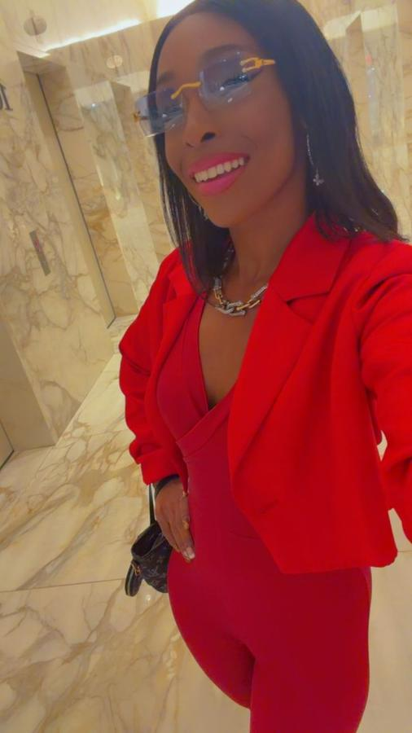

The plug behind Atlanta’s next big room.
I’m Taylor Frucel, an award-winning Atlanta publicist, event producer and brand strategist. I get brands seen and rooms filled. Now I’m building the Resource Center, a place to work, learn and gather, and I’m looking for the partners and funders who want in.
The Resource Center: a place to work, learn and gather.
Atlanta’s entrepreneurs, creatives and neighbors deserve a home base. The Resource Center is a proposed coworking, learning and event space built to give them practical tools, real community and room to grow.

Hi, I’m Taylor.
My passion is business. My purpose is people.
I’m a 5-time award-winning publicist, entrepreneur, event producer and businesswoman with more than 15 years across marketing, public relations, real estate, business development and brand growth.
I create safe, engaging, culturally inclusive experiences that bring communities together and drive tourism and economic opportunity. My superpower is influence, and the Resource Center is how I plan to use it for the long run.
Six ways I make you impossible to ignore.
- 01
Public relations & media
Press write-ups, media pitching, blog placements, interviews and red carpet coverage that get your story told.
- 02
Event production
Concept to curtain call. 45+ events produced in Atlanta and 220+ coordinated nationwide.
- 03
Branding & marketing
Campaigns, social media growth and EPKs that turn a name into a brand people remember.
- 04
Sponsorships & partnerships
The right brands in the right rooms, with deals that work for everybody at the table.
- 05
Talent & entertainment relations
Liaison, bookings and relationships for artists, hosts and productions.
- 06
Business development & consulting
Leadership coaching and growth plans that connect your passion to your purpose.
The receipts.
A few of the rooms, red carpets and stages I’ve worked, as listed in my media kit. This is the track record behind the Resource Center.
- BET Awards2019 · 2023 · 2024 · 2025
- Revolt TV2018 · 2020 · 2023 · 2024 · 2025
- GRAMMYs2023
- Super Bowl2017
- WE tv Red Carpet2023
- Hollywood Impact Awards2022
- A3C Festival2024
- World Cup2026
- Claressa Shields Fight Night2026
Where I’m usually found.
Culture & connection.
A gathering for creatives, entertainment professionals and culture-minded guests during awards season. Dates and registration are posted on Eventbrite.
Good questions.
What is the Resource Center?
The Resource Center is a proposed community resource and event center in Atlanta, Georgia, led by Taylor Frucel. It brings coworking and business services, event space, professional development, a library and learning center, and media and technology access under one roof.
How much funding is being sought, and what will it cover?
The goal is $150,000 to establish the Atlanta flagship. It covers the facility build-out and furnishings, technology and equipment, learning programs and library resources, and launch costs with working capital.
How can I support or partner with the Resource Center?
Funders, sponsors, community organizations and future members can get in touch through the contact form, by phone at (443) 347-3239, or by email at tsenterprisesatlanta@gmail.com. Choose "Resource Center Funding & Partnerships" so the message reaches Taylor directly.
What does Taylor Success Enterprise do?
The agency provides public relations and media placement, red carpet coverage, event production, branding and marketing campaigns, sponsorships and partnerships, talent and entertainment relations, and business development consulting.
Does the agency work outside Atlanta?
Yes. Taylor Success Enterprise is headquartered in Atlanta and works with clients across the United States and internationally.
How do I hire Taylor for a project?
Use the contact form, call (443) 347-3239 or email tsenterprisesatlanta@gmail.com. Share your goal, timeline and a budget range if you know it, and Taylor will follow up.
Let’s build something worth talking about.
Hiring a publicist, producing an event, or ready to back the Resource Center? Start here.